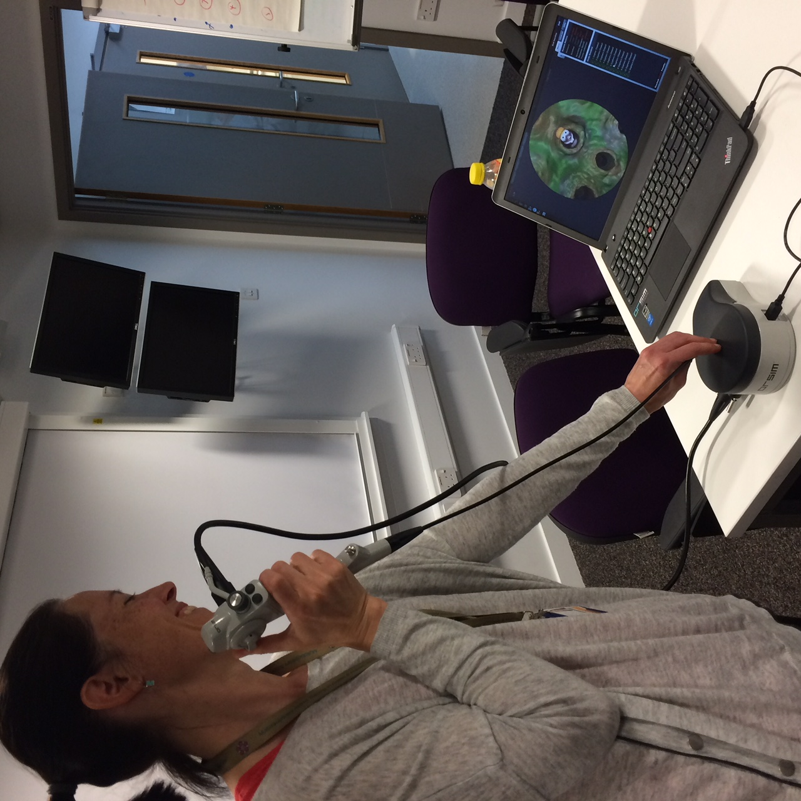
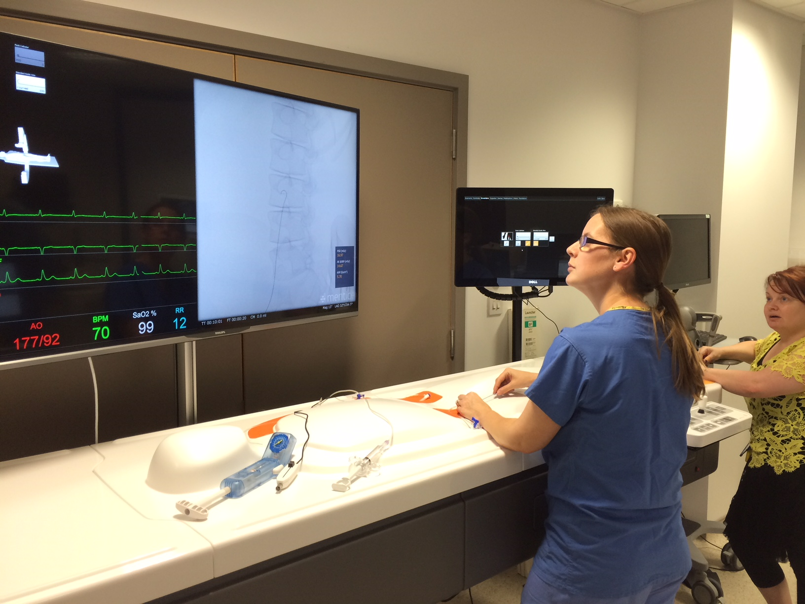

Equipment that makes a scenario feel real.
Our simulation suites combine high-fidelity manikins, part-task trainers, VR and an in-situ trauma bay — so training happens as close to real clinical conditions as possible.

A dedicated resus bay set up with real monitors, drug trolleys and a SimMan 3G manikin, letting multi-disciplinary teams train in the actual clinical space they work in.

A dedicated bronchoscopy simulator with real-time airway visualisation, used to build airway and scope-handling skills before working on patients.

A fluoroscopy-linked vascular access rig with live vital-sign monitoring, for procedural training in a controlled, repeatable environment.

Mobile haptic and virtual reality rigs for procedural rehearsal, deployed for our VR Workshop and rotated across sites.
Book a session in our simulation suite.
Suites are available for scheduled courses and bespoke departmental training. Tell us your team size and the skills you're focused on.
Enquire about a booking